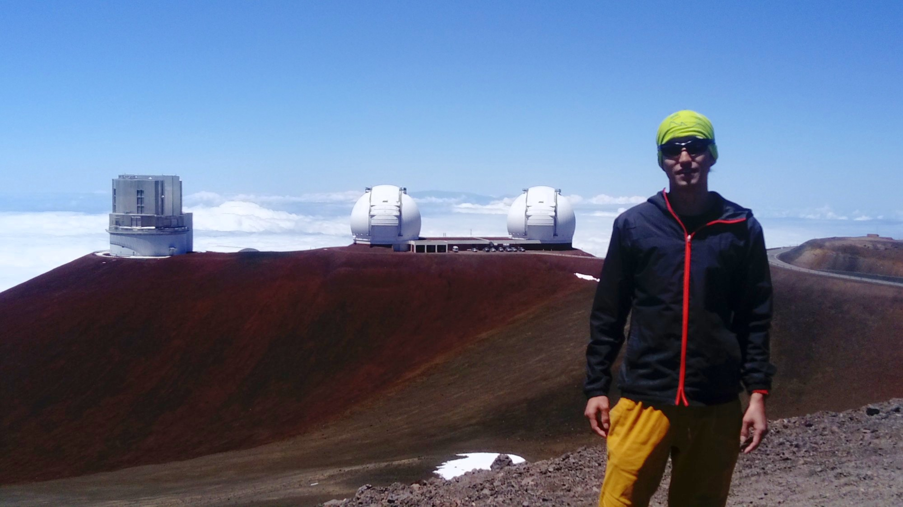
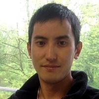

About Me
Introduction
Hi, I'm Koki Kakiichi, Assistant Professor / DAWN Fellow at the Cosmic Dawn Center at the Niels Bohr Institute, University of Copenhagen.
I am an astrophysicist. I work on understanding the formation and evolution of the first galaxies, supermassive black holes, and cosmic reionization in the first billion years of the Universe. I consider myself a theorist who does observations. I enjoy combining both theory and observation, and studying a wide range of problems in extragalactic astronomy and cosmology where the physics of radiative transfer and hydrodynamics (or more fashionably, radiation hydrodynamics) plays an important role in both controlling the astrophysical phenomena themselves and interpreting the observations. For more details about my research, please click here.
I am the Principal Investigator of the JWST COSMOS-3D program (265 hours, Large Treasury Program, more detail can be found here).
I was formerly an assistant project scientist and postdoctoral researcher at the University of California, Santa Barbara, and University College London. I completed my PhD at the Max-Planck Institute for Astrophysics in Germany, and my Master's and undergraduate studies at the University of Edinburgh in the UK. Before that, I studied chemical engineering at Suzuka National College of Technology in Japan from the age of 15 to 20. I grew up in a small town in Japan, then moved to Europe and the United States for my career in astrophysics. My full CV can be found below.
Besides astrophysics, I like backcountry skiing/snowboarding, rock climbing, and being in the mountains in general.
Contact details
Address
The Cosmic Dawn CenterNiels Bohr Institute
University of Copenhagen
Jagtvej 155A
2200 Kobenhavn N, Denmark

Calicrium Vitae
Employment
UUniversity Copenhagen, Denmark
2023 - Present
Assistant Professor / DAWN Fellow
University of California, Santa Barbara, USA
2019 - 2023
Assitant Project Scientist (2022 - 2023)
Postdoctoral Researcher (2019 - 2022)
University College London, United Kingdom
2016 - 2019
Postdoctoral Researcher
Education
Max-Planck Institute for Astrophysics, Germany
2012 - 2016
Doctor of Natural Sciences (Dr. rer. nat.)
September 2012 - July 2016
Degree awarded by: Ludwig Maxmilians University of Munich
Thesis: "The High Redshift Universe: Galaxy Formation and the Intergalactic Medium"
The University of Edinburgh, United Kingdom
2008 - 2012
Master of Physics with honours in Astrophysics (2011 - 2012)
Bachelor of Science in Physics (2008 - 2011)
Suzuka National College of Technology, Japan
2003 - 2008
Associate Degree in Chemistry